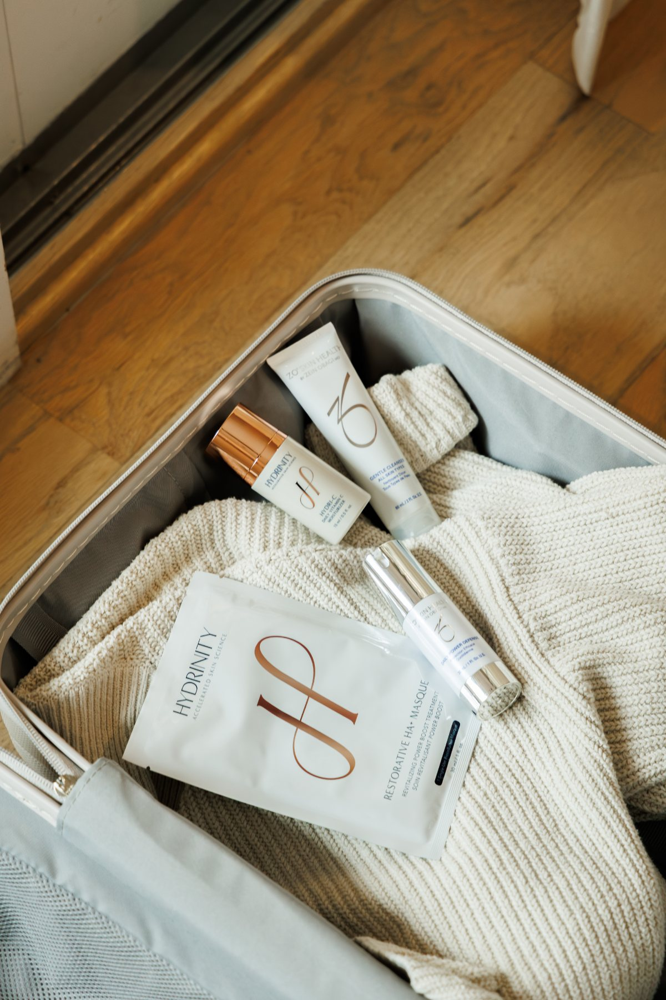

Services
Concierge Aesthetics, Wellness + Skincare
Personalized Care That Starts With You
Your goals are personal. Your care should be, too.
Isabelle Joseph, DNP, NP-BC provides concierge aesthetic, wellness, and skincare services designed around your individual concerns, goals, and lifestyle.
Whether you want to soften the appearance of fine lines, better understand changes happening in your body, improve your skin, address hair thinning, or simply aren't sure where to begin, Isabelle can help you understand your options and determine an approach that makes sense for you. And because care is concierge, Isabelle comes to you.

How Can Isabelle Help?
Start With What You're Experiencing
You don't have to know the name of the treatment you need before reaching out. Start with your concern.
Isabelle will help you understand the options available, answer your questions, and determine whether a treatment or service is appropriate for your individual needs. Explore Isabelle's services below.
Aesthetics
Thoughtful Treatments. Natural-Looking Results.
Aesthetic care shouldn't be about changing the way you look. Isabelle takes a personalized approach to aesthetics, considering your individual anatomy, concerns, goals, and preferences before recommending treatment.
The goal is thoughtful care designed to help you feel refreshed, confident, and still completely like yourself.
Tox
Soften the appearance of expression lines while maintaining natural movement. Tox treatments use neuromodulators to temporarily relax targeted muscles responsible for dynamic lines and wrinkles. Treatment may be considered for concerns such as forehead lines, frown lines, and crow's feet. Isabelle takes a conservative, personalized approach based on your anatomy and aesthetic goals.
Hyperhidrosis
When excessive sweating interferes with everyday life, treatment options are available. Hyperhidrosis causes excessive sweating beyond what the body typically needs for temperature regulation. Neuromodulator treatment may help temporarily reduce excessive sweating by targeting the chemical signals responsible for activating sweat glands in treated areas.
Chemical Peels
Refresh dull, uneven, or changing skin. Chemical peels use carefully selected solutions to exfoliate the skin and encourage renewal. Depending on your skin and the treatment selected, peels may help improve concerns such as uneven tone, texture, dullness, pigmentation, and visible signs of aging.
Wellness
Support for the Changes You Can Feel
Your health and wellness needs can change over time. Isabelle provides personalized wellness services designed to help patients better understand those changes, explore appropriate treatment options, and make informed decisions about their care.
GLP-1 Weight Management
A medically guided approach to weight management. Weight is complex, and successful weight management isn't simply about willpower. For appropriate patients, GLP-1 medications may be one tool used as part of a medically guided approach. Isabelle can help you understand the program, discuss your health and goals, and determine whether GLP-1 weight-management support may be appropriate for you.
Hormone Replacement Therapy
Understand your symptoms. Explore your options. Hormonal changes can affect many aspects of how you feel. Hormone replacement therapy may be an option for certain patients experiencing symptoms associated with hormonal changes. Isabelle provides personalized guidance to help you better understand your symptoms, available options, and whether HRT may be appropriate for your individual health needs.
Hair Loss
Hair changes deserve more than a one-size-fits-all solution. Hair thinning and hair loss can occur for many reasons, and understanding what's contributing to the change is an important part of determining an appropriate path forward. Isabelle can help you explore available hair-loss treatment options and develop an approach based on your individual concerns and goals.
Skin Health
Better Skin Starts With Understanding Your Skin
Skincare doesn't need to be complicated. Isabelle helps patients move beyond trends and trial-and-error by taking a more personalized approach to skin health.
Together, you can identify your concerns, simplify your routine, and explore skincare options based on what your skin actually needs.
Prescription Skincare
Target specific skin concerns with personalized prescription options. For some skin concerns, prescription skincare may provide options beyond traditional over-the-counter products. Depending on your individual needs, Isabelle can help determine whether prescription skincare is appropriate and provide guidance on incorporating it into your routine.
Personalized Skincare Consultations
Stop guessing which products belong in your routine. A personalized skincare consultation gives you an opportunity to discuss your skin, current routine, concerns, and goals with Isabelle. From acne and pigmentation to texture, dryness, and visible signs of aging, Isabelle can help you build a realistic skincare routine using products selected with your individual skin in mind.
Medical-Grade Skincare
Great skincare isn't about having more products. It's about having the right ones. Isabelle can help patients understand medical-grade skincare, active ingredients, and how different products may fit into an effective routine. Explore Isabelle's skincare recommendations and shop products through her Skin Clique storefront.

The Concierge Difference
Care Designed to Fit Into Your Life
Finding time for yourself shouldn't require rearranging your entire schedule. Through her concierge model, Isabelle brings personalized aesthetic, wellness, and skincare care directly to you.
Appointments can take place in your home, office, or another convenient location, creating an experience that's private, comfortable, and centered around you.
Isabelle is based in South Easton, Massachusetts and serves South Easton and select surrounding communities, including Norwell, Randolph, Somerset, Stoughton, and Westwood.
You Don't Have to Figure It Out Alone.
It's completely normal to know what you'd like to improve without knowing which treatment or service might help. That's where Isabelle comes in.
Start with a conversation about what you're experiencing and what you'd like to accomplish. Isabelle can help you understand your options, answer your questions, and determine an appropriate next step. No pressure. No one-size-fits-all plan. Just personalized guidance to help you make an informed decision.
Explore. Learn. Decide What's Right for You.
Aesthetics, wellness, and skincare can come with a lot of information—and sometimes even more opinions.
The Isabelle Edit makes it easier to understand the topics that matter to you with straightforward education about treatments, skin health, products, wellness, and more.
Ready to Get Started?
Experience a more personal approach to aesthetics, wellness, and skin health with Isabelle Joseph, DNP, NP-BC.